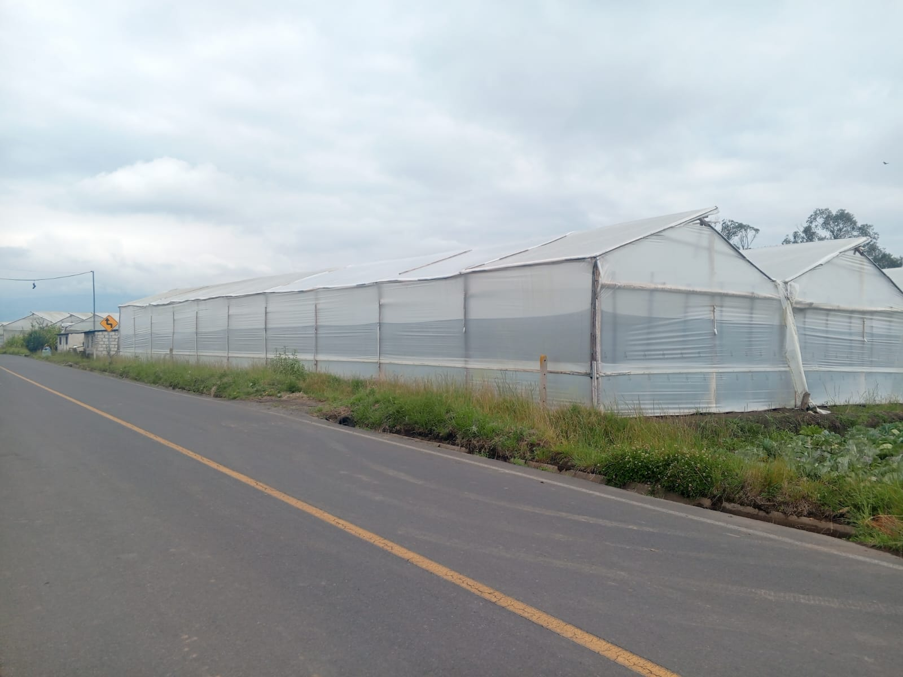
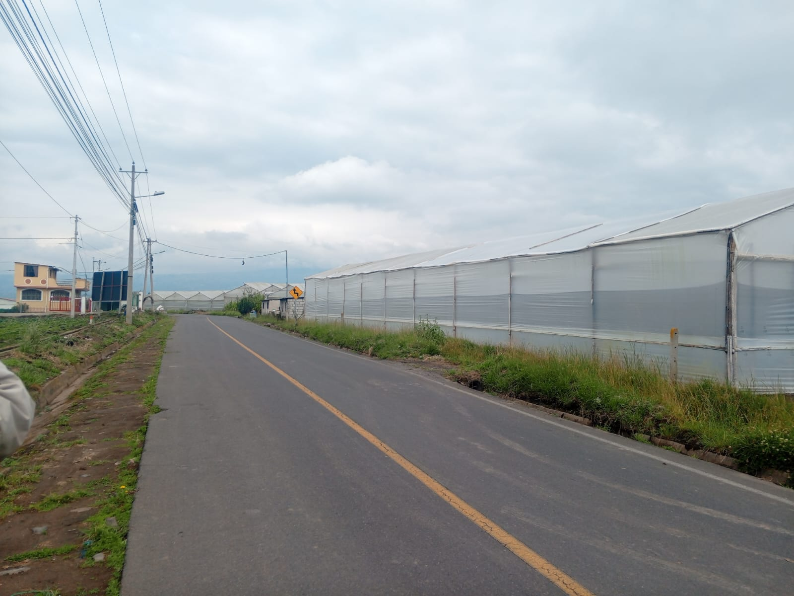
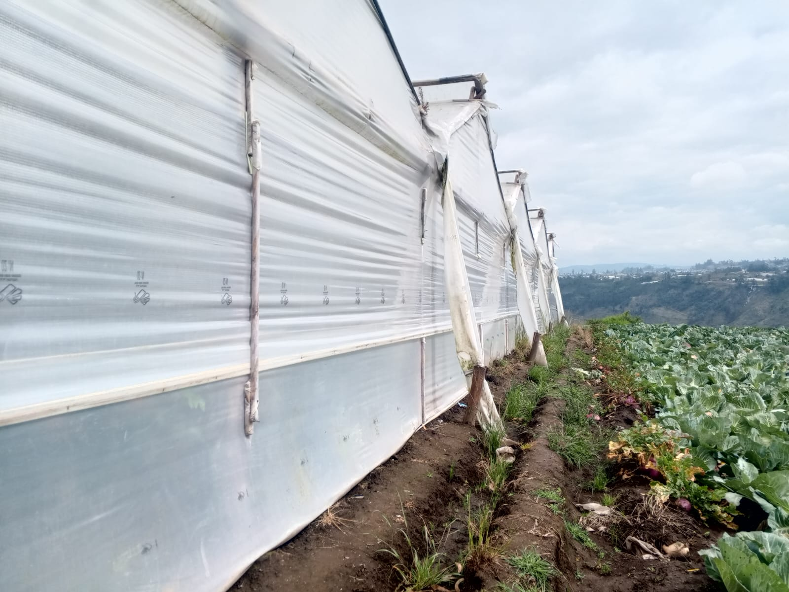
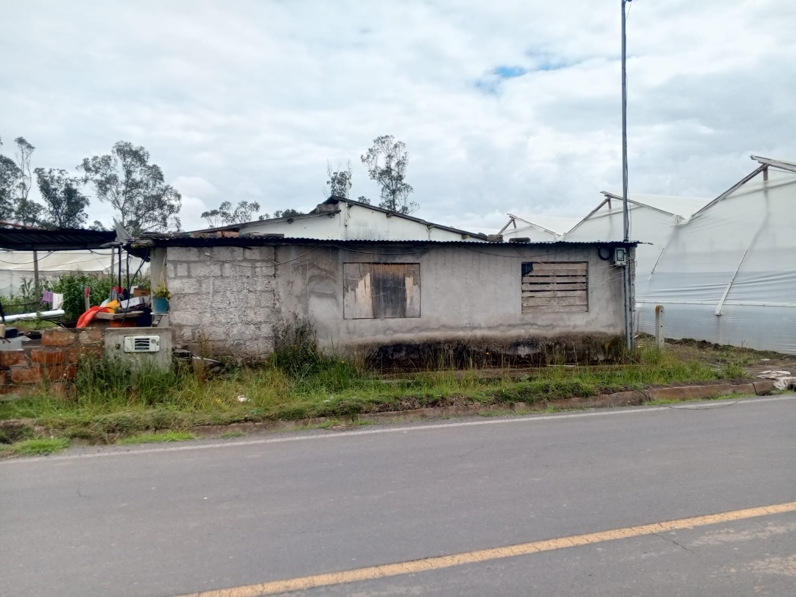
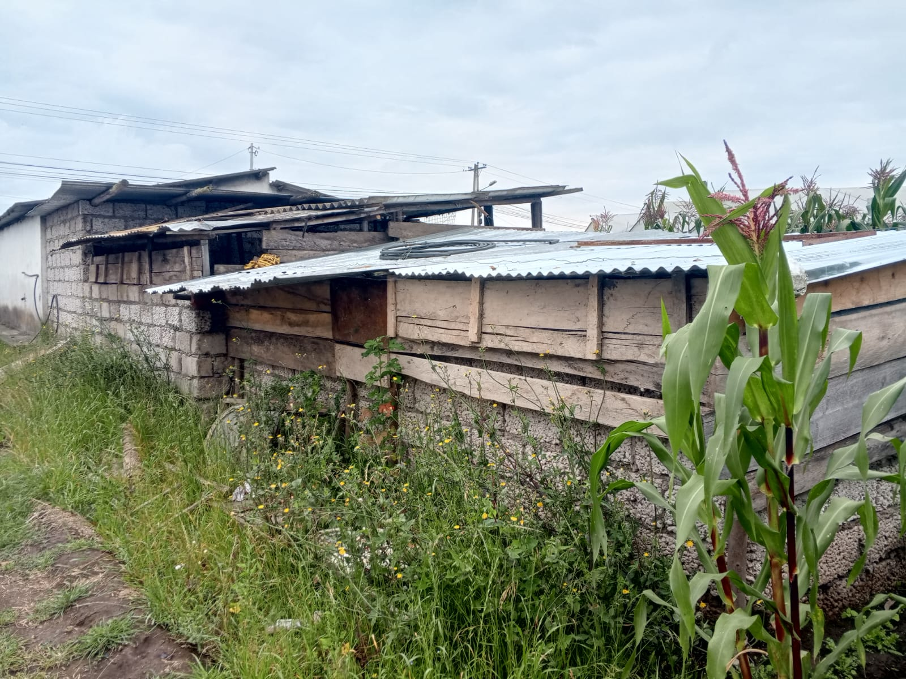
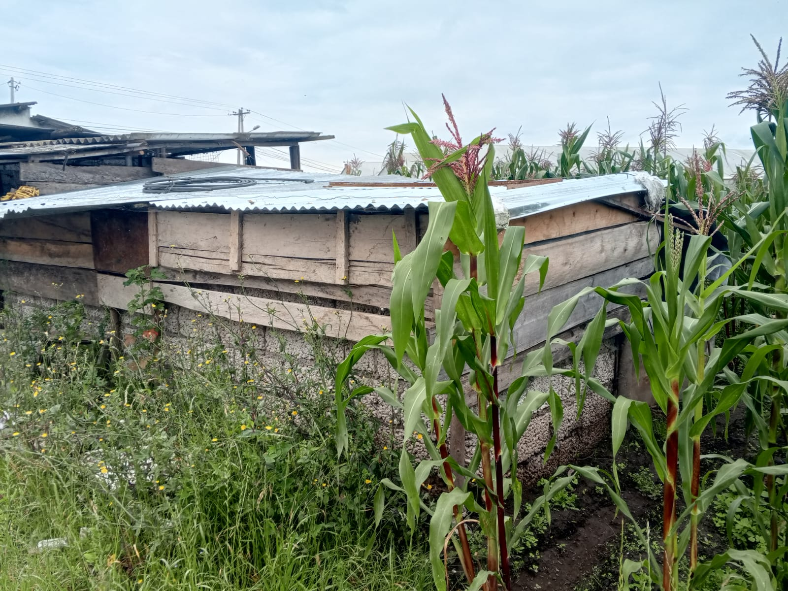

← volver al mapa
Terreno - EC-RJ-154464
EC-RJ-154464 · terreno · AMBATO, Tungurahua






Datos del remate
| Avalúo pericial | $47,497 |
| Tipo de bien | terreno |
| Área de construcción | 138.58 m² |
| Área de terreno | 615.96 m² |
| Cantón / Provincia | AMBATO, Tungurahua |
| Dirección / Sector | quillánloma, parroquia izamba, cantón ambato, provincia de tungurahua.. quillánloma, parroquia izamba, cantón ambato, provincia de tungurahua |
| Señalamiento | Retasa de Bienes |
| Fecha de remate | 2026-08-25 |
| No. de proceso | 18334202101115 |
Análisis vs. mercado
Descartado del análisis automático: comparables insuficientes (3/5).
Descripción completa del avalúo
se trata de un terreno de 20615.96 m2 que dispone de 3 casas pequeñas de construcción rústica (paredes de bloque trabado, estructura de cubierta de madera y techo de zinc que en conjunto son 138.58 m2; además tiene unos 21 invernaderos con estructura metálica y paredes y cubierta de plástico(no están valorizados por ser desmontables)
terreno en zona rural con casas en mal estado y varios invernaderos
quillánloma, parroquia izamba, cantón ambato, provincia de tungurahua
Límites: norte con víctor hugo núñez alulema en 160.81 m; sur con calle cienfuegos en 313.05 m;este con luis aníbal flores moreta en 64.85 m y oeste con maría carmelina lalaleo en 183.74 m.
Clave catastral: 18015603050020000000
Periodo de posturas: 25/08/2026 00:00:00 a 25/08/2026 23:59:59
Dependencia jurisdiccional: UNIDAD JUDICIAL CIVIL CON SEDE EN EL CANTÓN AMBATO
Análisis de inversión
★ Buena oportunidadEl avalúo (~$47,497) sobre 20,616 m² de terreno (mencionados en el texto pero no capturados por el sistema) equivale a apenas ~$2.30/m² — parece muy barato; incluye 3 casas rústicas y 21 invernaderos.
A favor:
- Precio por m² aparentemente muy bajo
- Incluye construcciones e invernaderos
En contra:
- Área no está registrada en el sistema, verificar manualmente
Análisis elaborado a partir de la descripción del avalúo — no es asesoría legal ni financiera.
Esta ficha es una copia de lo publicado en el sitio oficial de remates
judiciales de la Función Judicial del Ecuador, para consulta — no
reemplaza el expediente judicial. remates.funcionjudicial.gob.ec no da
un link propio por remate, por eso se generó esta página aparte.
Antes de ofertar, el expediente debe revisarlo un abogado.